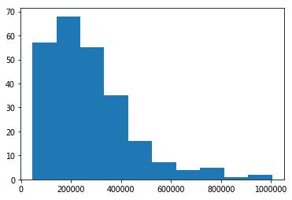
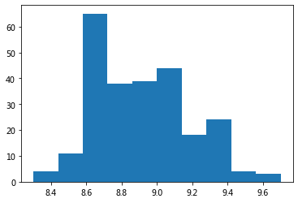
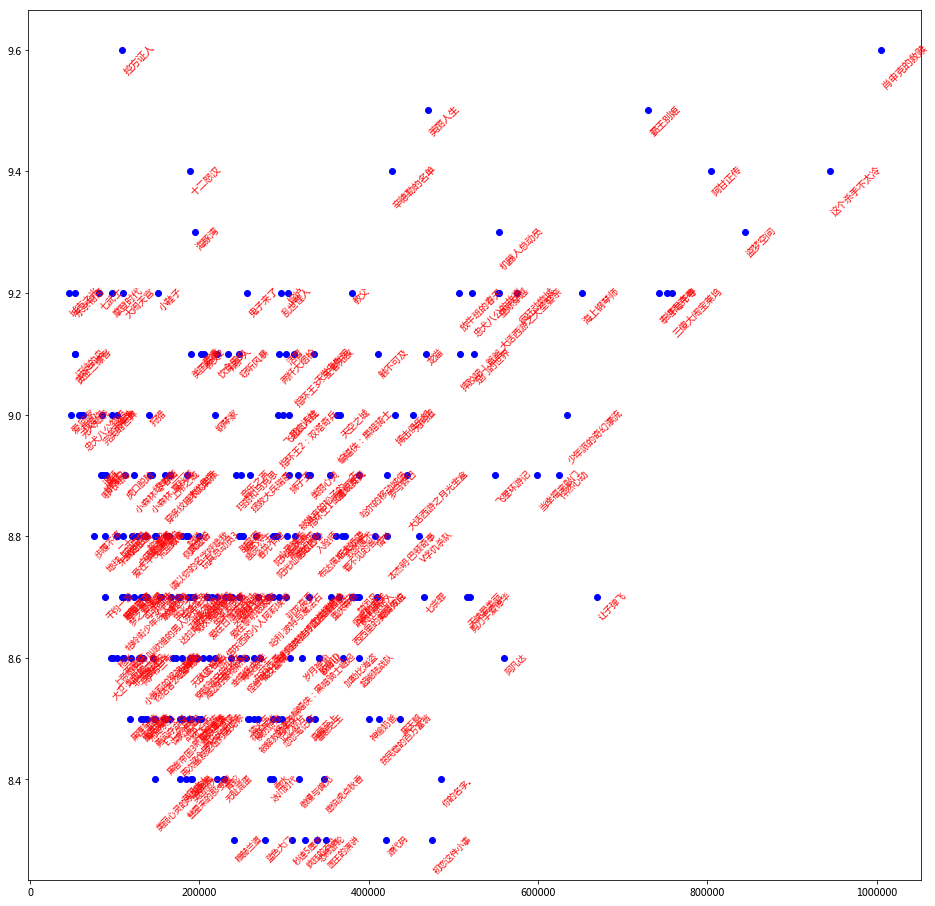

使用requests + Xpath抓取豆瓣电影数据¶
Xpath 即为 XML 路径语言（XML Path Language），它是一种用来确定 XML 文档中某部分位置的语言。
Xpath 基于 XML 的树状结构，提供在数据结构树中找寻节点的能力。起初 Xpath 的提出的初衷是将其作为一个通用的、介于 Xpointer 与 XSL 间的语法模型。但是Xpath 很快的被开发者采用来当作小型查询语言。
获取元素的Xpath信息并获得文本： 这里的“元素的Xpath信息”是需要我们手动获取的，获取方式为：
定位目标元素
在网站上依次点击：右键 > 检查
copy xpath
xpath + ‘/text()’
参考：https://mp.weixin.qq.com/s/zx3_eflBCrrfOqFEWjAUJw
import requests
from lxml import etree
url = 'https://movie.douban.com/subject/26611804/'
requests.get(url)
<Response [418]>
如果不加headers，响应状态：418， 正常返回状态应该是 200
418啥意思？就是你爬取的网站有反爬虫机制，我们要向服务器发出爬虫请求，需要添加请求头：headers
如何加请求头headers?
网页右键“检查元素”-Network-Doc 如上图

import requests
from lxml import etree
url = 'https://movie.douban.com/subject/26611804/'
headers ={'User-Agent': 'Mozilla/5.0 (Macintosh; Intel Mac OS X 10_14_6) AppleWebKit/537.36 (KHTML, like Gecko) Chrome/86.0.4240.183 Safari/537.36'}
data = requests.get(url, headers = headers).text
s = etree.HTML(data)
豆瓣电影的名称对应的的xpath为xpath_title，那么title表达为：
title = s.xpath('xpath_info/text()')
其中，xpath_info为：
//*[@id="content"]/h1/span[1]
title = s.xpath('//*[@id="content"]/h1/span[1]/text()')[0]
director = s.xpath('//*[@id="info"]/span[1]/span[2]/a/text()')
actors = s.xpath('//*[@id="info"]/span[3]/span[2]/a/text()')
type1 = s.xpath('//*[@id="info"]/span[5]/text()')
type2 = s.xpath('//*[@id="info"]/span[6]/text()')
type3 = s.xpath('//*[@id="info"]/span[7]/text()')
time = s.xpath('//*[@id="info"]/span[11]/text()')
length = s.xpath('//*[@id="info"]/span[13]/text()')
score = s.xpath('//*[@id="interest_sectl"]/div[1]/div[2]/strong/text()')[0]
print(title, director, actors, type1, type2, type3, time, length, score)
三块广告牌 Three Billboards Outside Ebbing, Missouri ['马丁·麦克唐纳'] ['弗兰西斯·麦克多蒙德', '伍迪·哈里森', '山姆·洛克威尔', '艾比·考尼什', '卢卡斯·赫奇斯', '彼特·丁拉基', '约翰·浩克斯', '卡赖伯·兰德里·琼斯', '凯瑟琳·纽顿', '凯瑞·康顿', '泽利科·伊万内克', '萨玛拉·维文', '克拉克·彼得斯', '尼克·瑟西', '阿曼达·沃伦', '玛拉雅·瑞沃拉·德鲁 ', '布兰登·萨克斯顿', '迈克尔·艾伦·米利甘'] ['剧情'] ['犯罪'] ['官方网站:'] ['2018-03-02(中国大陆)'] ['2017-12-01(美国)'] 8.7
Douban API¶
https://developers.douban.com/wiki/?title=guide
https://github.com/computational-class/douban-api-docs
import requests
# https://movie.douban.com/subject/26611804/
url = 'https://api.douban.com/v2/movie/subject/26611804?apikey=0b2bdeda43b5688921839c8ecb20399b&start=0&count=20&client=&udid='
jsonm = requests.get(url).json()
jsonm.keys()
dict_keys(['msg', 'code', 'request'])
jsonm['msg']
'invalid_credencial2'
#jsonm.values()
jsonm['rating']
(dict_keys(['schedule_url', 'title', 'aka', 'photos_count', 'languages', 'year', 'tags', 'blooper_urls', 'images', 'trailers', 'popular_reviews', 'videos', 'summary', 'clip_urls', 'do_count', 'comments_count', 'has_ticket', 'ratings_count', 'countries', 'has_video', 'collect_count', 'wish_count', 'writers', 'directors', 'id', 'mainland_pubdate', 'popular_comments', 'episodes_count', 'website', 'clips', 'casts', 'genres', 'reviews_count', 'douban_site', 'alt', 'pubdate', 'trailer_urls', 'mobile_url', 'share_url', 'durations', 'seasons_count', 'photos', 'pubdates', 'subtype', 'current_season', 'has_schedule', 'bloopers', 'collection', 'rating', 'original_title']),
{'average': 7.5,
'details': {'1': 206.0,
'2': 1590.0,
'3': 15843.0,
'4': 21556.0,
'5': 7558.0},
'max': 10,
'min': 0,
'stars': '40'})
jsonm['alt']
'https://movie.douban.com/subject/1764796/'
jsonm['casts'][0]
{'alt': 'https://movie.douban.com/celebrity/1010548/',
'avatars': {'large': 'https://img3.doubanio.com/view/celebrity/s_ratio_celebrity/public/p1436865941.42.jpg',
'medium': 'https://img3.doubanio.com/view/celebrity/s_ratio_celebrity/public/p1436865941.42.jpg',
'small': 'https://img3.doubanio.com/view/celebrity/s_ratio_celebrity/public/p1436865941.42.jpg'},
'id': '1010548',
'name': '弗兰西斯·麦克多蒙德',
'name_en': 'Frances McDormand'}
jsonm['directors']
[{'alt': 'https://movie.douban.com/celebrity/1000304/',
'avatars': {'large': 'https://img3.doubanio.com/view/celebrity/s_ratio_celebrity/public/p1406649730.61.jpg',
'medium': 'https://img3.doubanio.com/view/celebrity/s_ratio_celebrity/public/p1406649730.61.jpg',
'small': 'https://img3.doubanio.com/view/celebrity/s_ratio_celebrity/public/p1406649730.61.jpg'},
'id': '1000304',
'name': '马丁·麦克唐纳',
'name_en': 'Martin McDonagh'}]
jsonm['genres']
['剧情', '犯罪']
作业：抓取豆瓣电影 Top 250¶
import requests
from bs4 import BeautifulSoup
from lxml import etree
url0 = 'https://movie.douban.com/top250?start=0&filter='
data = requests.get(url0, headers=headers).text
s = etree.HTML(data)
//*[@id="content"]/div/div[1]/ol/li[1]/div/div[2]/div[1]/a/span[1]
/html/body/div[3]/div[1]/div/div[1]/ol/li[1]/div/div[2]/div[1]/a/span[1]
str1 = '//*[@id="content"]/div/div[1]/ol/li['
str2 = ']/div/div[2]/div[1]/a/span[1]/text()'
xstr_list = [str1 + str(i+1) +str2 for i in range(25)]
[s.xpath(i)[0] for i in xstr_list]
['肖申克的救赎',
'霸王别姬',
'阿甘正传',
'这个杀手不太冷',
'泰坦尼克号',
'美丽人生',
'千与千寻',
'辛德勒的名单',
'盗梦空间',
'忠犬八公的故事',
'海上钢琴师',
'星际穿越',
'楚门的世界',
'三傻大闹宝莱坞',
'机器人总动员',
'放牛班的春天',
'大话西游之大圣娶亲',
'熔炉',
'疯狂动物城',
'无间道',
'教父',
'龙猫',
'当幸福来敲门',
'怦然心动',
'触不可及']
s.xpath('//*[@id="content"]/div/div[1]/ol/li[1]/div/div[2]/div[1]/a/span[1]/text()')[0]
'肖申克的救赎'
s.xpath('//*[@id="content"]/div/div[1]/ol/li[2]/div/div[2]/div[1]/a/span[1]/text()')[0]
'霸王别姬'
s.xpath('//*[@id="content"]/div/div[1]/ol/li[3]/div/div[2]/div[1]/a/span[1]/text()')[0]
'这个杀手不太冷'
import requests
from bs4 import BeautifulSoup
url0 = 'https://movie.douban.com/top250?start=0&filter='
data = requests.get(url0, headers = headers).text
soup = BeautifulSoup(data, 'lxml')
movies = soup.find_all('div', {'class', 'info'})
len(movies)
25
movies[0].a['href']
'https://movie.douban.com/subject/1292052/'
movies[0].find('span', {'class', 'title'}).text
'肖申克的救赎'
movies[0].find('div', {'class', 'star'})
<div class="star">
<span class="rating5-t"></span>
<span class="rating_num" property="v:average">9.7</span>
<span content="10.0" property="v:best"></span>
<span>2180198人评价</span>
</div>
movies[0].find('span', {'class', 'rating_num'}).text
'9.7'
people_num = movies[0].find('div', {'class', 'star'}).find_all('span')[-1]
people_num.text.split('人评价')[0]
'2180198'
for i in movies:
url = i.a['href']
title = i.find('span', {'class', 'title'}).text
des = i.find('div', {'class', 'star'})
rating = des.find('span', {'class', 'rating_num'}).text
rating_num = des.find_all('span')[-1].text.split('人评价')[0]
print(url, title, rating, rating_num)
https://movie.douban.com/subject/1292052/ 肖申克的救赎 9.7 2180198
https://movie.douban.com/subject/1291546/ 霸王别姬 9.6 1617190
https://movie.douban.com/subject/1292720/ 阿甘正传 9.5 1645488
https://movie.douban.com/subject/1295644/ 这个杀手不太冷 9.4 1830376
https://movie.douban.com/subject/1292722/ 泰坦尼克号 9.4 1599954
https://movie.douban.com/subject/1292063/ 美丽人生 9.5 1021593
https://movie.douban.com/subject/1291561/ 千与千寻 9.4 1713845
https://movie.douban.com/subject/1295124/ 辛德勒的名单 9.5 839385
https://movie.douban.com/subject/3541415/ 盗梦空间 9.3 1600397
https://movie.douban.com/subject/3011091/ 忠犬八公的故事 9.4 1091928
https://movie.douban.com/subject/1292001/ 海上钢琴师 9.3 1303992
https://movie.douban.com/subject/1889243/ 星际穿越 9.3 1272630
https://movie.douban.com/subject/1292064/ 楚门的世界 9.3 1186190
https://movie.douban.com/subject/3793023/ 三傻大闹宝莱坞 9.2 1456332
https://movie.douban.com/subject/2131459/ 机器人总动员 9.3 1027953
https://movie.douban.com/subject/1291549/ 放牛班的春天 9.3 1011523
https://movie.douban.com/subject/1292213/ 大话西游之大圣娶亲 9.2 1163415
https://movie.douban.com/subject/5912992/ 熔炉 9.3 713037
https://movie.douban.com/subject/25662329/ 疯狂动物城 9.2 1401001
https://movie.douban.com/subject/1307914/ 无间道 9.2 952194
https://movie.douban.com/subject/1291841/ 教父 9.3 712979
https://movie.douban.com/subject/1291560/ 龙猫 9.2 973850
https://movie.douban.com/subject/1849031/ 当幸福来敲门 9.1 1173041
https://movie.douban.com/subject/3319755/ 怦然心动 9.1 1366194
https://movie.douban.com/subject/6786002/ 触不可及 9.2 759487
for i in range(0, 250, 25):
print('https://movie.douban.com/top250?start=%d&filter='% i)
https://movie.douban.com/top250?start=0&filter=
https://movie.douban.com/top250?start=25&filter=
https://movie.douban.com/top250?start=50&filter=
https://movie.douban.com/top250?start=75&filter=
https://movie.douban.com/top250?start=100&filter=
https://movie.douban.com/top250?start=125&filter=
https://movie.douban.com/top250?start=150&filter=
https://movie.douban.com/top250?start=175&filter=
https://movie.douban.com/top250?start=200&filter=
https://movie.douban.com/top250?start=225&filter=
import requests
from bs4 import BeautifulSoup
dat = []
for j in range(0, 250, 25):
urli = 'https://movie.douban.com/top250?start=%d&filter='% j
print(urli)
data = requests.get(urli, headers = headers).text
soup = BeautifulSoup(data, 'lxml')
movies = soup.find_all('div', {'class', 'info'})
for i in movies:
url = i.a['href']
title = i.find('span', {'class', 'title'}).text
des = i.find('div', {'class', 'star'})
rating = des.find('span', {'class', 'rating_num'}).text
rating_num = des.find_all('span')[-1].text.split('人评价')[0]
listi = [url, title, rating, rating_num]
dat.append(listi)
https://movie.douban.com/top250?start=0&filter=
https://movie.douban.com/top250?start=25&filter=
https://movie.douban.com/top250?start=50&filter=
https://movie.douban.com/top250?start=75&filter=
https://movie.douban.com/top250?start=100&filter=
https://movie.douban.com/top250?start=125&filter=
https://movie.douban.com/top250?start=150&filter=
https://movie.douban.com/top250?start=175&filter=
https://movie.douban.com/top250?start=200&filter=
https://movie.douban.com/top250?start=225&filter=
import pandas as pd
df = pd.DataFrame(dat, columns = ['url', 'title', 'rating', 'rating_num'])
df['rating'] = df.rating.astype(float)
df['rating_num'] = df.rating_num.astype(int)
df.head()
| url | title | rating | rating_num | |
|---|---|---|---|---|
| 0 | https://movie.douban.com/subject/1292052/ | 肖申克的救赎 | 9.7 | 2180198 |
| 1 | https://movie.douban.com/subject/1291546/ | 霸王别姬 | 9.6 | 1617258 |
| 2 | https://movie.douban.com/subject/1292720/ | 阿甘正传 | 9.5 | 1645488 |
| 3 | https://movie.douban.com/subject/1295644/ | 这个杀手不太冷 | 9.4 | 1830376 |
| 4 | https://movie.douban.com/subject/1292722/ | 泰坦尼克号 | 9.4 | 1599954 |
%matplotlib inline
import matplotlib.pyplot as plt
plt.hist(df.rating_num)
plt.show()

plt.hist(df.rating)
plt.show()

# viz
fig = plt.figure(figsize=(16, 16),facecolor='white')
plt.plot(df.rating_num, df.rating, 'bo')
for i in df.index:
plt.text(df.rating_num[i], df.rating[i], df.title[i],
fontsize = df.rating[i],
color = 'red', rotation = 45)
plt.show()

df[df.rating > 9.4]
| url | title | rating | rating_num | |
|---|---|---|---|---|
| 0 | https://movie.douban.com/subject/1292052/ | 肖申克的救赎 | 9.6 | 1004428 |
| 1 | https://movie.douban.com/subject/1291546/ | 霸王别姬 | 9.5 | 730274 |
| 4 | https://movie.douban.com/subject/1292063/ | 美丽人生 | 9.5 | 469332 |
| 41 | https://movie.douban.com/subject/1296141/ | 控方证人 | 9.6 | 108598 |
alist = []
for i in df.index:
alist.append( [df.rating_num[i], df.rating[i], df.title[i] ])
blist =[[df.rating_num[i], df.rating[i], df.title[i] ] for i in df.index]
alist
[[1021383, 9.5999999999999996, '肖申克的救赎'],
[742984, 9.5, '霸王别姬'],
[957578, 9.4000000000000004, '这个杀手不太冷'],
[814634, 9.4000000000000004, '阿甘正传'],
[475813, 9.5, '美丽人生'],
[762619, 9.3000000000000007, '千与千寻'],
[754309, 9.3000000000000007, '泰坦尼克号'],
[433191, 9.4000000000000004, '辛德勒的名单'],
[853620, 9.3000000000000007, '盗梦空间'],
[559729, 9.3000000000000007, '机器人总动员'],
[657670, 9.1999999999999993, '海上钢琴师'],
[767473, 9.1999999999999993, '三傻大闹宝莱坞'],
[529473, 9.1999999999999993, '忠犬八公的故事'],
[513071, 9.1999999999999993, '放牛班的春天'],
[561091, 9.1999999999999993, '大话西游之大圣娶亲'],
[533017, 9.0999999999999996, '楚门的世界'],
[473631, 9.0999999999999996, '龙猫'],
[385130, 9.1999999999999993, '教父'],
[309138, 9.1999999999999993, '熔炉'],
[560855, 9.1999999999999993, '星际穿越'],
[299301, 9.1999999999999993, '乱世佳人'],
[416073, 9.0999999999999996, '触不可及'],
[458107, 9.0, '无间道'],
[606767, 8.9000000000000004, '当幸福来敲门'],
[337952, 9.0999999999999996, '天堂电影院'],
[633995, 8.9000000000000004, '怦然心动'],
[190977, 9.4000000000000004, '十二怒汉'],
[434420, 9.0, '搏击俱乐部'],
[640800, 9.0, '少年派的奇幻漂流'],
[260089, 9.1999999999999993, '鬼子来了'],
[367866, 9.0999999999999996, '蝙蝠侠：黑暗骑士'],
[314885, 9.0999999999999996, '指环王3：王者无敌'],
[306344, 9.0999999999999996, '活着'],
[369956, 9.0, '天空之城'],
[585740, 9.1999999999999993, '疯狂动物城'],
[426150, 8.9000000000000004, '罗马假日'],
[451703, 8.9000000000000004, '大话西游之月光宝盒'],
[554642, 8.9000000000000004, '飞屋环游记'],
[249586, 9.0999999999999996, '窃听风暴'],
[296760, 9.0999999999999996, '两杆大烟枪'],
[111737, 9.5999999999999996, '控方证人'],
[301329, 9.0, '飞越疯人院'],
[358755, 8.9000000000000004, '闻香识女人'],
[393556, 8.9000000000000004, '哈尔的移动城堡'],
[196094, 9.3000000000000007, '海豚湾'],
[464601, 8.8000000000000007, 'V字仇杀队'],
[237421, 9.0999999999999996, '辩护人'],
[309071, 9.0, '死亡诗社'],
[207619, 9.0999999999999996, '教父2'],
[333942, 8.9000000000000004, '美丽心灵'],
[296196, 9.0, '指环王2：双塔奇兵'],
[331529, 8.9000000000000004, '指环王1：魔戒再现'],
[411534, 8.8000000000000007, '情书'],
[223469, 9.0999999999999996, '饮食男女'],
[517803, 9.0999999999999996, '摔跤吧！爸爸'],
[191667, 9.0999999999999996, '美国往事'],
[309325, 8.9000000000000004, '狮子王'],
[220420, 9.0, '钢琴家'],
[520325, 8.6999999999999993, '天使爱美丽'],
[205704, 9.0999999999999996, '素媛'],
[469032, 8.6999999999999993, '七宗罪'],
[153673, 9.1999999999999993, '小鞋子'],
[320506, 8.9000000000000004, '被嫌弃的松子的一生'],
[375951, 8.8000000000000007, '致命魔术'],
[378652, 8.8000000000000007, '看不见的客人'],
[251308, 8.9000000000000004, '音乐之声'],
[315215, 8.8000000000000007, '勇敢的心'],
[523686, 8.6999999999999993, '剪刀手爱德华'],
[425844, 8.8000000000000007, '本杰明·巴顿奇事'],
[365086, 8.8000000000000007, '低俗小说'],
[385562, 8.6999999999999993, '西西里的美丽传说'],
[307307, 8.8000000000000007, '黑客帝国'],
[262404, 8.9000000000000004, '拯救大兵瑞恩'],
[383825, 8.6999999999999993, '沉默的羔羊'],
[338488, 8.8000000000000007, '入殓师'],
[414361, 8.6999999999999993, '蝴蝶效应'],
[677352, 8.6999999999999993, '让子弹飞'],
[270494, 8.8000000000000007, '春光乍泄'],
[244643, 8.9000000000000004, '玛丽和马克思'],
[111733, 9.1999999999999993, '大闹天宫'],
[295606, 8.8000000000000007, '心灵捕手'],
[189568, 8.9000000000000004, '末代皇帝'],
[292721, 8.8000000000000007, '阳光灿烂的日子'],
[254400, 8.8000000000000007, '幽灵公主'],
[252833, 8.8000000000000007, '第六感'],
[359281, 8.6999999999999993, '重庆森林'],
[389844, 8.6999999999999993, '禁闭岛'],
[345885, 8.8000000000000007, '布达佩斯大饭店'],
[271656, 8.6999999999999993, '大鱼'],
[142601, 9.0, '狩猎'],
[284871, 8.6999999999999993, '哈利·波特与魔法石'],
[296911, 8.6999999999999993, '射雕英雄传之东成西就'],
[344355, 8.5999999999999996, '致命ID'],
[248165, 8.8000000000000007, '甜蜜蜜'],
[344588, 8.5999999999999996, '断背山'],
[251749, 8.6999999999999993, '猫鼠游戏'],
[166973, 8.9000000000000004, '一一'],
[367791, 8.6999999999999993, '告白'],
[289385, 8.8000000000000007, '阳光姐妹淘'],
[373118, 8.5999999999999996, '加勒比海盗'],
[166903, 8.9000000000000004, '上帝之城'],
[97659, 9.1999999999999993, '摩登时代'],
[162190, 8.9000000000000004, '穿条纹睡衣的男孩'],
[565530, 8.5999999999999996, '阿凡达'],
[237864, 8.6999999999999993, '爱在黎明破晓前'],
[385266, 8.6999999999999993, '消失的爱人'],
[188690, 8.8000000000000007, '风之谷'],
[212467, 8.6999999999999993, '爱在日落黄昏时'],
[181917, 8.8000000000000007, '侧耳倾听'],
[275127, 8.5999999999999996, '倩女幽魂'],
[146507, 8.9000000000000004, '红辣椒'],
[241887, 8.6999999999999993, '恐怖直播'],
[185888, 8.8000000000000007, '超脱'],
[217398, 8.6999999999999993, '萤火虫之墓'],
[304866, 8.6999999999999993, '驯龙高手'],
[239308, 8.5999999999999996, '幸福终点站'],
[195650, 8.6999999999999993, '菊次郎的夏天'],
[144405, 8.9000000000000004, '小森林 夏秋篇'],
[341432, 8.5, '喜剧之王'],
[323425, 8.5999999999999996, '岁月神偷'],
[232077, 8.6999999999999993, '借东西的小人阿莉埃蒂'],
[82623, 9.1999999999999993, '七武士'],
[405200, 8.5, '神偷奶爸'],
[222549, 8.6999999999999993, '杀人回忆'],
[102681, 9.0, '海洋'],
[332455, 8.5, '真爱至上'],
[210611, 8.6999999999999993, '电锯惊魂'],
[415291, 8.5, '贫民窟的百万富翁'],
[191225, 8.6999999999999993, '谍影重重3'],
[149579, 8.8000000000000007, '喜宴'],
[266681, 8.5999999999999996, '东邪西毒'],
[295660, 8.5, '记忆碎片'],
[220414, 8.5999999999999996, '雨人'],
[257769, 8.5999999999999996, '怪兽电力公司'],
[440539, 8.5, '黑天鹅'],
[391224, 8.6999999999999993, '疯狂原始人'],
[179698, 8.6999999999999993, '英雄本色'],
[154659, 8.6999999999999993, '燃情岁月'],
[127219, 8.8000000000000007, '卢旺达饭店'],
[112345, 8.9000000000000004, '虎口脱险'],
[189074, 8.6999999999999993, '7号房的礼物'],
[300454, 8.5, '恋恋笔记本'],
[125724, 8.9000000000000004, '小森林 冬春篇'],
[320997, 8.5, '傲慢与偏见'],
[208380, 8.5999999999999996, '海边的曼彻斯特'],
[290089, 8.6999999999999993, '哈利·波特与死亡圣器(下)'],
[168987, 8.6999999999999993, '萤火之森'],
[138798, 8.8000000000000007, '教父3'],
[86319, 9.0, '完美的世界'],
[156471, 8.6999999999999993, '纵横四海'],
[151799, 8.8000000000000007, '荒蛮故事'],
[105774, 8.8000000000000007, '二十二'],
[135526, 8.8000000000000007, '魂断蓝桥'],
[259388, 8.5, '猜火车'],
[194663, 8.5999999999999996, '穿越时空的少女'],
[201714, 8.8000000000000007, '玩具总动员3'],
[260957, 8.5, '花样年华'],
[97486, 9.0, '雨中曲'],
[183786, 8.5999999999999996, '心迷宫'],
[214531, 8.5999999999999996, '时空恋旅人'],
[351836, 8.4000000000000004, '唐伯虎点秋香'],
[392857, 8.5999999999999996, '超能陆战队'],
[110358, 8.8000000000000007, '我是山姆'],
[309924, 8.5999999999999996, '蝙蝠侠：黑暗骑士崛起'],
[199924, 8.5999999999999996, '人工智能'],
[139242, 8.6999999999999993, '浪潮'],
[285601, 8.4000000000000004, '冰川时代'],
[289504, 8.4000000000000004, '香水'],
[288650, 8.5, '朗读者'],
[132226, 8.6999999999999993, '罗生门'],
[174301, 8.8000000000000007, '请以你的名字呼唤我'],
[251364, 8.5999999999999996, '爆裂鼓手'],
[85770, 8.9000000000000004, '追随'],
[138571, 8.6999999999999993, '一次别离'],
[104317, 8.8000000000000007, '未麻的部屋'],
[181166, 8.5999999999999996, '撞车'],
[334741, 8.6999999999999993, '血战钢锯岭'],
[135259, 8.6999999999999993, '可可西里'],
[182221, 8.5, '战争之王'],
[343703, 8.3000000000000007, '恐怖游轮'],
[89868, 8.8000000000000007, '地球上的星星'],
[116667, 8.6999999999999993, '梦之安魂曲'],
[176988, 8.6999999999999993, '达拉斯买家俱乐部'],
[270993, 8.5999999999999996, '被解救的姜戈'],
[192717, 8.5, '阿飞正传'],
[112326, 8.6999999999999993, '牯岭街少年杀人事件'],
[200329, 8.5, '谍影重重'],
[166328, 8.5, '谍影重重2'],
[204653, 8.5, '魔女宅急便'],
[240090, 8.6999999999999993, '头脑特工队'],
[164479, 8.8000000000000007, '房间'],
[63374, 9.0, '忠犬八公物语'],
[87474, 8.9000000000000004, '惊魂记'],
[110499, 8.6999999999999993, '碧海蓝天'],
[179269, 8.5, '再次出发之纽约遇见你'],
[231647, 8.4000000000000004, '青蛇'],
[157071, 8.5999999999999996, '小萝莉的猴神大叔'],
[53476, 9.1999999999999993, '东京物语'],
[312322, 8.3000000000000007, '秒速5厘米'],
[84575, 8.9000000000000004, '哪吒闹海'],
[109454, 8.6999999999999993, '末路狂花'],
[169778, 8.5999999999999996, '海盗电台'],
[111040, 8.6999999999999993, '绿里奇迹'],
[147035, 8.5999999999999996, '终结者2：审判日'],
[424177, 8.3000000000000007, '源代码'],
[267159, 8.5999999999999996, '模仿游戏'],
[192005, 8.5, '新龙门客栈'],
[162903, 8.5, '黑客帝国3：矩阵革命'],
[147043, 8.5, '勇闯夺命岛'],
[189831, 8.5, '这个男人来自地球'],
[125973, 8.6999999999999993, '一个叫欧维的男人决定去死'],
[129304, 8.5999999999999996, '卡萨布兰卡'],
[494602, 8.4000000000000004, '你的名字。'],
[46323, 9.1999999999999993, '城市之光'],
[221714, 8.4000000000000004, '变脸'],
[132083, 8.5999999999999996, '荒野生存'],
[53099, 9.0999999999999996, '迁徙的鸟'],
[159426, 8.5, 'E.T. 外星人'],
[192409, 8.4000000000000004, '发条橙'],
[231469, 8.4000000000000004, '无耻混蛋'],
[479894, 8.3000000000000007, '初恋这件小事'],
[53709, 9.0999999999999996, '黄金三镖客'],
[191992, 8.4000000000000004, '美国丽人'],
[121427, 8.8000000000000007, '爱在午夜降临前'],
[178607, 8.4000000000000004, '英国病人'],
[60049, 9.0, '无人知晓'],
[110300, 8.5999999999999996, '燕尾蝶'],
[120585, 8.5999999999999996, '非常嫌疑犯'],
[328162, 8.3000000000000007, '疯狂的石头'],
[112286, 8.5999999999999996, '叫我第一名'],
[90201, 8.9000000000000004, '勇士'],
[242926, 8.3000000000000007, '穆赫兰道'],
[190730, 8.5999999999999996, '无敌破坏王'],
[352129, 8.3000000000000007, '国王的演讲'],
[77399, 8.8000000000000007, '步履不停'],
[137843, 8.5, '血钻'],
[99101, 8.5999999999999996, '上帝也疯狂'],
[186988, 8.4000000000000004, '彗星来的那一夜'],
[103282, 8.5999999999999996, '枪火'],
[278772, 8.3000000000000007, '蓝色大门'],
[97025, 8.5999999999999996, '大卫·戈尔的一生'],
[134046, 8.5, '遗愿清单'],
[59825, 9.0, '我爱你'],
[89377, 8.6999999999999993, '千钧一发'],
[139223, 8.5, '荒岛余生'],
[48744, 9.0, '爱·回家'],
[119390, 8.5, '黑鹰坠落'],
[131277, 8.8000000000000007, '聚焦'],
[131618, 8.5, '麦兜故事'],
[148685, 8.4000000000000004, '暖暖内含光']]
# from IPython.display import display_html, HTML
# HTML('<iframe src=http://nbviewer.jupyter.org/github/computational-class/bigdata/blob/gh-pages/vis/douban250bubble.html \
# width=1000 height=500></iframe>')
作业：¶
抓取复旦新媒体微信公众号最新一期的内容
requests.post模拟登录豆瓣（包括获取验证码）¶
https://blog.csdn.net/zhuzuwei/article/details/80875538